Préparer une trajectoire de ponçage pas à pas, sur l'exemple de la grande girouette.
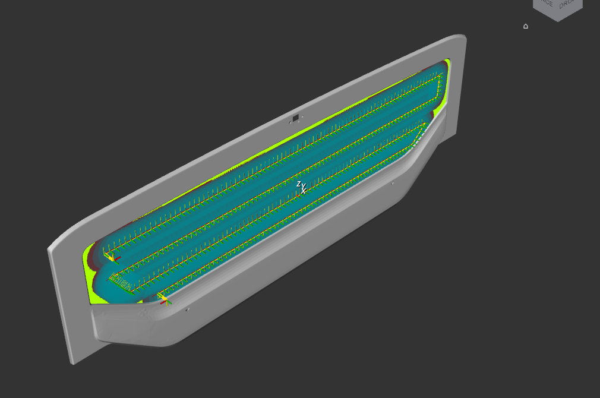
Résultat obtenu à la fin de ce guide : une trajectoire de 337 points sur la zone centrale de la
grande girouette. En bleu, la zone balayée par le disque de la ponceuse. En vert, ce qui reste à couvrir.
Pour qui
Un utilisateur qui programme déjà des trajectoires de robot industriel
(points, approches, repères) et qui découvre Noether.
Pièce d'exemple
Grande girouette découpe ADAS, référence 5803171401
Version
Noether Zone 404, V1.1 (interface en français)
Date
1er novembre 2026
1. À quoi sert Noether
Noether calcule la trajectoire de la ponceuse sur une pièce, à partir de son fichier CAO. On choisit la
zone à poncer, on dessine le chemin à la souris directement sur la pièce, et Noether en tire la liste des
points que le robot va suivre, avec l'orientation de l'outil en chaque point. C'est l'équivalent d'un
programme de déplacement, mais créé sur le modèle 3D au lieu d'être appris point par point sur le robot.
1 FichierOuvrir la pièce CAO
2 SélectionChoisir la zone à poncer
3 TraitementDessiner le chemin, générer les points, retoucher
4 TrajectoireOrdonner les passes, exporter
Ces quatre étapes sont les quatre premiers onglets de la fenêtre. Le cinquième onglet, Affichage,
règle ce qui est dessiné et l'orientation de la vue.
Correspondance avec la programmation robot
Dans Noether
Équivalent en programmation robot
Pose
Un point de la trajectoire : position X, Y, Z et orientation de l'outil.
Passe
Une trajectoire continue, outil en contact : une suite de points en mouvement linéaire,
précédée d'un point d'approche et suivie d'un point de dégagement.
Approche, retrait
Points de dégagement au-dessus du premier et du dernier point de contact,
à la hauteur d'approche (50 mm par défaut), dans l'axe de l'outil.
Repère de la pièce
Repère utilisateur (ou repère objet) attaché à la pièce : c'est le repère du
fichier CAO. Toutes les poses y sont exprimées, en mètres.
Surface
La zone de la pièce à poncer, choisie à la souris.
Tracé
Le chemin dessiné à la main sur une surface, comme une suite de points de passage.
Couverture
Part de la surface balayée par le disque de la ponceuse le long de la trajectoire.
Deux mots reviennent souvent. Le maillage est la pièce découpée en petits triangles, la forme que
Noether utilise pour calculer. La normale est la direction perpendiculaire à la surface en un point :
l'outil est toujours orienté selon elle.
2. Lancer Noether et lire la fenêtre
Double-cliquer sur l'icône Noether du bureau. Si la fenêtre est déjà ouverte, le double-clic la ramène
au premier plan. Si un message d'erreur s'affiche au lancement, le transmettre à l'équipe Zone 404.
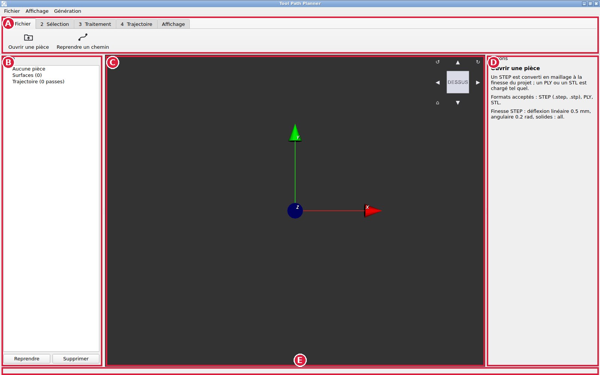
Fenêtre au démarrage, sans pièce chargée. Les lettres repèrent les zones décrites ci-dessous.
Zone
Rôle
A Ruban
Un onglet par étape, et les boutons de l'étape choisie.
B Arbre
La pièce, ses surfaces avec leur tracé, puis les passes générées.
Les boutons Reprendre et Supprimer agissent sur la surface choisie dans l'arbre.
C Vue 3D
La pièce, la sélection, les tracés, le disque de l'outil et la trajectoire.
D Options
L'aide et les réglages du bouton choisi dans le ruban.
E Barre d'état
À gauche, ce qu'il faut faire ensuite. À droite, la taille de la
pièce et la couverture.
Se déplacer dans la vue
Geste
Effet
Molette
Zoom.
Clic droit maintenu et glissé
Tourner autour de la pièce, quel que soit le bouton choisi dans le ruban.
Clic gauche maintenu et glissé
Tourner, sauf avec Brosse, Gomme, Tracé manuel et Éditer les
points, qui se servent du clic gauche. Avec ces quatre outils, maintenir Alt pour tourner, ou utiliser le clic droit.
Cube, en haut à droite de la vue
Clic sur une face, une arête ou un coin : la vue se place de ce côté (page 4).
Affichage, Vues standard
Boutons Face, Dessus, Côté et Isométrique.
Les menus Fichier, Affichage et Génération, en haut, reprennent des actions du ruban.
Ce guide n'utilise que le ruban.
3. Étape 1 : ouvrir la pièce
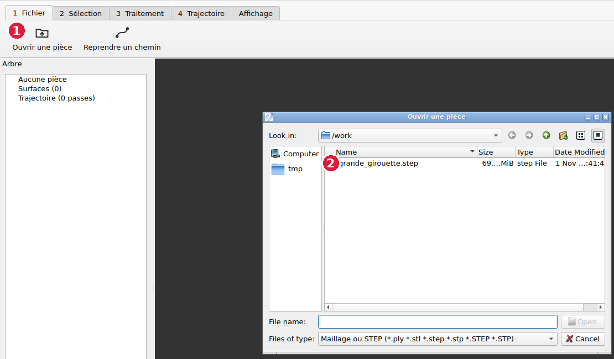
1 Onglet 1 Fichier, bouton Ouvrir une pièce.
2 Double-clic sur le fichier.
Onglet 1 Fichier, cliquer Ouvrir une pièce.
Choisir le fichier de la pièce. Formats acceptés : STEP (.step, .stp), le format
d'échange CAO habituel, ainsi que PLY et STL. Le fichier doit se trouver dans votre dossier personnel
ou un de ses sous-dossiers : Noether ne voit pas les autres disques.
Attendre que la pièce apparaisse. Un STEP est d'abord converti en maillage : pour la grande girouette
(fichier de 69 Mo), la conversion prend environ une minute. Deux fichiers sont créés à côté du STEP, de même
nom, en .ply (le maillage) et en .yaml (le compte rendu de conversion).
Contrôler la taille de la pièce
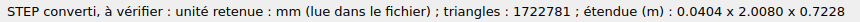
Barre d'état après chargement : unité lue dans le fichier (mm), nombre de triangles et
étendue de la pièce en mètres selon X, Y et Z.
L'étendue de la grande girouette est 0,0404 x 2,0080 x 0,7228 m : 4 cm d'épaisseur, 2 m de long,
72 cm de haut. Comparer ces valeurs aux dimensions réelles de la pièce. Une valeur mille fois trop grande
(2008 m) ou trop petite signale une erreur d'unité.
Un STEP porte son unité, Noether la lit. Un PLY ou un STL n'en porte pas : il est lu en mètres.
Un PLY ou un STL exporté en millimètres apparaît donc mille fois trop grand. Dans le doute, ouvrir le STEP.
4. Orienter la vue
À l'ouverture, la grande girouette est vue par la tranche. Pour la mettre de face :
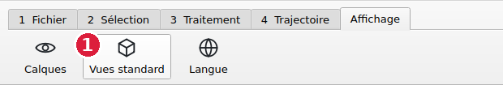
1 Onglet Affichage, Vues standard.
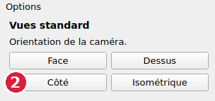
2 Bouton Côté.
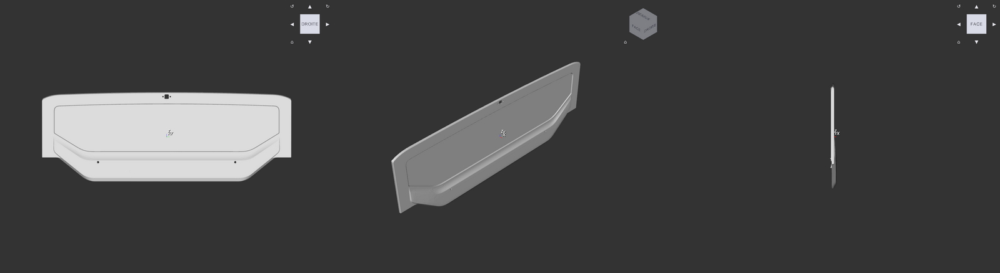
Ce que donnent les trois boutons sur la grande girouette. Gauche : bouton Côté, la pièce est de face.
Milieu : bouton Isométrique. Droite : bouton Face, la pièce est vue par la tranche.
Les noms des boutons se rapportent aux axes du fichier CAO, pas à la pièce : Côté regarde selon
l'axe X du fichier, et la grande girouette est dessinée face à X. Sur une autre pièce, essayer les quatre boutons
et garder celui qui montre la zone à poncer bien en face. Ajuster ensuite le zoom à la molette.
Le cube de navigation
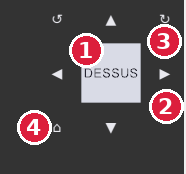
1 Face du cube. 2 Flèches vers la face voisine.
3 Quart de tour. 4 Maison.
Le cube, en haut à droite de la vue, tourne avec la pièce. Il donne la même chose que les boutons, sans changer d'onglet :
clic au centre d'une face : la vue se place face à elle ; clic près d'une arête ou d'un coin : vue de biais ;
clic gauche glissé sur le cube : la vue tourne ;
quand la vue est bien en face d'une face, des flèches apparaissent : les triangles passent à la face voisine,
les flèches courbes tournent l'image d'un quart de tour ;
la maison remet la vue isométrique.
Les noms des faces se rapportent aux axes du fichier CAO : DROITE regarde depuis +X, comme le bouton Côté.
Autres réglages de l'onglet Affichage
Calques : afficher ou cacher la pièce, les tracés, la trajectoire et les repères des poses ;
régler le dessin du disque de l'outil et des zones non couvertes.
Langue : français ou anglais. Le choix est gardé d'un lancement à l'autre.
5. Étape 2 : choisir la zone à poncer
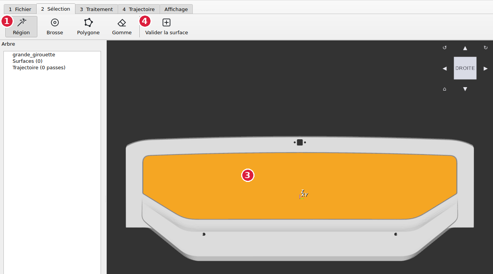
1 Outil Région. 3 Un clic sur la zone
centrale : elle passe en orange. 4 Valider la surface.
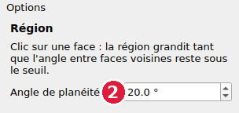
2 Angle de planéité, 20° par défaut.
Onglet 2 Sélection, outil Région.
Cliquer sur la zone à poncer. La sélection s'étend de proche en proche tant que la surface ne fait pas
de pli plus marqué que l'angle de planéité. À 20°, la zone centrale de la grande girouette s'arrête
à ses arêtes, sans déborder sur le pourtour. Si la sélection déborde, baisser l'angle et recliquer ;
si elle s'arrête trop tôt sur une surface bombée, l'augmenter.
Cliquer Valider la surface. La sélection devient une surface dans l'arbre, et passe en rouge dans la vue.
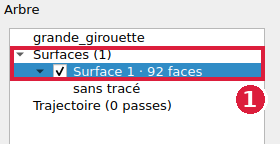
1 « Surface 1 · 92 faces », encore « sans tracé ».
Outil
Geste
Région
Clic sur la zone. Pour une zone lisse bordée d'arêtes nettes.
Brosse
Clic gauche glissé : peint les faces sous le pinceau. Maintenir Maj avant de cliquer pour effacer.
Polygone
Un clic par sommet du contour. Pour fermer : cliquer le premier sommet, ou Entrée,
ou double-clic. Retour arrière retire le dernier sommet, Échap annule.
Gomme
Clic gauche glissé : retire des faces de la sélection.
Une sélection faite de plusieurs morceaux séparés est refusée : valider chaque morceau comme une surface.
Pour modifier une surface déjà validée : la choisir dans l'arbre et cliquer Reprendre. Son tracé est alors effacé.
6. Étape 3 : régler l'outil et dessiner le chemin
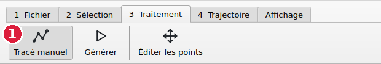
1 Onglet 3 Traitement, Tracé manuel.
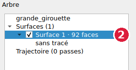
2 Choisir la surface dans l'arbre.
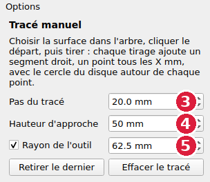
3 Pas du tracé. 4 Hauteur d'approche.
5 Rayon de l'outil.
Réglage
Effet
Valeur par défaut
Pas du tracé
Distance entre deux points de la trajectoire.
20 mm
Hauteur d'approche
Distance des points d'approche et de dégagement au-dessus de la pièce.
50 mm
Rayon de l'outil
Rayon du disque de ponçage. Sert au dessin du disque et au calcul de la couverture.
62,5 mm (disque de 125 mm)
Régler ces valeurs avant de dessiner. Si la ponceuse porte un autre disque, saisir son rayon.
Dessiner
Cliquer sur la surface : c'est le point de départ.
Cliquer à l'endroit du point suivant : un segment droit relie les deux points. On peut aussi maintenir le
clic et glisser pour voir le segment avant de relâcher. Continuer ainsi, point par point. Un point hors de la
surface est ignoré.
Retour arrière retire le dernier point, Échap efface tout le tracé. Les boutons
Retirer le dernier et Effacer le tracé font de même.
Le chemin suit exactement les segments dessinés : Noether ne remplit pas la surface tout seul.
C'est à l'utilisateur de dessiner les allers-retours, comme il le ferait en apprenant les points d'un programme
de ponçage.
6. Étape 3 (suite) : contrôler la couverture
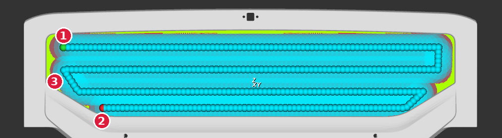
Tracé de la grande girouette : 8 points cliqués, soit 4 bandes horizontales reliées par 3 descentes,
espacées d'environ 100 mm. 1 Départ (point vert). 2 Fin (point
rouge). 3 Zone non couverte (vert citron).
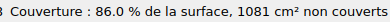
La couverture, à droite de la barre d'état.
Le disque de la ponceuse est dessiné en bleu autour de chaque point. Ce que le disque n'atteint pas est
dessiné en vert citron. La barre d'état donne la part couverte : ici 85,9 % de la surface, avec
1089 cm² non couverts, surtout aux deux bouts et le long du bord haut. La mesure se met à jour après chaque point.
Règles pour dessiner le serpentin
Écart entre deux bandes = diamètre du disque moins le recouvrement voulu.
Avec un disque de 125 mm et 25 mm de recouvrement : 100 mm, comme ici.
Distance au bord : le centre du disque doit passer à moins d'un rayon (62,5 mm) du bord pour que le bord soit poncé.
Contrôle : chercher les zones vert citron, rapprocher le tracé de ces zones, relire la couverture.
Aucun seuil de couverture minimale n'est fixé à ce jour pour la cellule MBC. La valeur sera
donnée par l'équipe Zone 404.
7. Étape 3 (suite) : générer la trajectoire
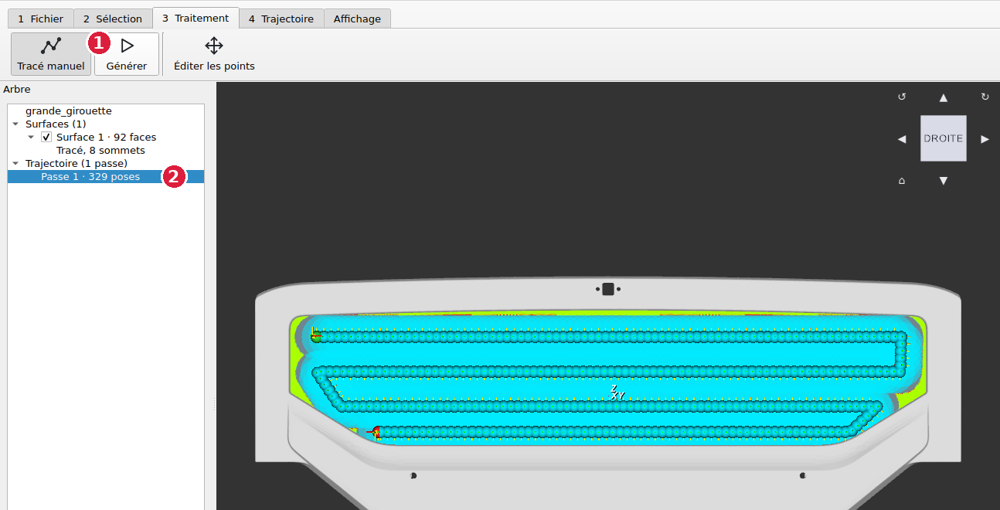
1 Générer. 2 La passe apparaît dans l'arbre :
« Passe 1 · 329 poses ».
Cliquer Générer. Chaque surface qui a un tracé donne une passe : les points du tracé tous les 20 mm,
un point d'approche avant le premier, un point de dégagement après le dernier. Une surface sans tracé est
signalée dans la barre d'état et ne donne pas de passe.
Les petits traits le long du chemin sont les repères des poses : ils montrent l'orientation de l'outil en chaque
point. L'outil reste perpendiculaire à la surface, et son axe X suit le sens d'avancement.
Sur la grande girouette, les 8 points cliqués donnent une passe de 329 poses.
Cliquer de nouveau Générer recalcule la trajectoire et efface les retouches faites après la
génération précédente. Noether demande confirmation avant.
8. Étape 3 (suite) : retoucher la trajectoire
L'outil Éditer les points retouche la trajectoire après Générer : on choisit des points, puis on
les déplace, on les supprime ou on en ajoute entre eux. Avant Générer, le même outil retouche les points du tracé.
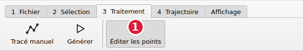
1 Onglet 3 Traitement, Éditer les points.
Geste
Effet
Survol d'un point
Le point s'éclaire en blanc.
Clic sur un point
Ce point seul est choisi, en magenta.
Ctrl + clic
Ajoute ou retire un point du choix.
Clic dans le vide, Échap
Plus aucun point choisi.
Glisser un point choisi
Tous les points choisis se déplacent, reposés sur la surface.
Suppr
Supprime les points choisis.
Ctrl+Z, Ctrl+Y
Annuler, rétablir.
Après un clic, une petite barre s'ouvre au-dessus du curseur avec Supprimer et Densifier ; les mêmes
boutons sont dans le panneau Options. Un bouton grisé a une bulle d'aide qui dit pourquoi. Une passe garde au
moins 4 poses, approche et retrait compris : Supprimer est grisé avant.
Densifier
Ajoute des points entre deux points existants, par exemple pour suivre de plus près une courbe ou un biais.
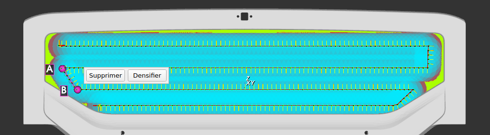
AB Deux points de la même passe, de part et d'autre
de la descente en biais. Les points à ajouter s'affichent en transparence.
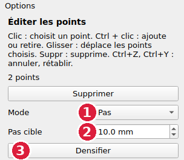
1 Mode : Pas ou Nombre. 2 Pas cible, 10 mm.
3 Densifier.
Clic sur un premier point (A), puis Ctrl + clic sur un second (B) de la même passe. Les lettres A et B
s'affichent dans la vue et le tronçon entre eux est surligné.
Choisir le mode : Pas place un point au moins tous les X mm ; Nombre ajoute N points dans
chaque intervalle entre A et B.
Contrôler l'aperçu, puis cliquer Densifier. A et B restent choisis : on peut densifier de nouveau.
Ici, la descente en biais passe d'un point tous les 20 mm à un point tous les 10 mm : 8 points sont ajoutés,
la passe passe de 329 à 337 poses. Les points existants ne bougent pas. Chaque point ajouté est posé sur la surface
de la passe, du côté de la pièce où sont A et B : il ne tombe jamais sur la face opposée d'une tôle mince.
Ctrl+Z défait toute la densification d'un coup.
9. Étape 4 : ordonner les passes et exporter
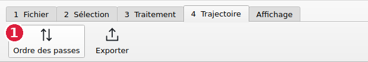
1 Onglet 4 Trajectoire, Ordre des passes.
Ordre des passes fixe l'ordre dans lequel le robot exécute les passes. Avec plusieurs surfaces, choisir
une passe dans la liste 2 et la monter ou la descendre 3.
Supprimer4 retire la passe de l'export. Annuler5
défait la dernière retouche, Rétablir6 la refait.
Ici une seule surface, donc une seule passe, de 337 poses après densification.
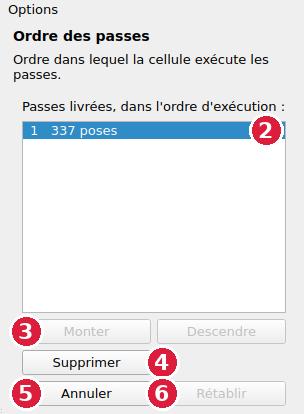
Liste des passes, dans l'ordre d'exécution.
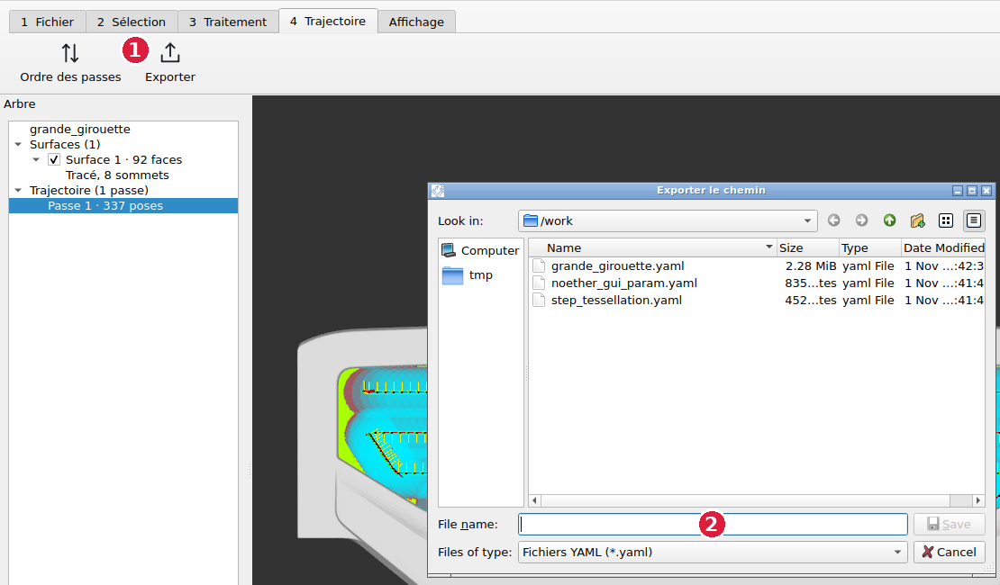
1 Exporter. 2 Saisir le nom du fichier dans le champ
« File name », ici chemin_grande_girouette.yaml, puis Entrée.
Ranger le fichier exporté à côté du fichier de la pièce. Ne pas choisir le nom d'un fichier déjà présent
(par exemple le .yaml créé à l'ouverture du STEP) : il serait remplacé.
10. Ce que contient le fichier exporté
Exporter écrit un seul fichier, chemin_grande_girouette.yaml : la trajectoire que le robot
exécute, avec les poses de chaque passe, retouches comprises.
Les poses
Le fichier est fait de listes imbriquées. La liste la plus interne est une passe : ses points dans l'ordre de
parcours. Les passes se suivent dans l'ordre d'exécution. Chaque point donne une position et une orientation dans le repère de la pièce (celui du fichier CAO) :
x, y, z : position en mètres ;
qw, qx, qy, qz : orientation sous forme de quaternion,
une autre écriture des angles RX, RY, RZ d'un point robot. Axe Z de la pose : la normale à la surface, qui sort
de la pièce. Axe X : le sens d'avancement.
-
-
- # passe 1
- x: 0.049771079921629283 # point d'approche, 50 mm devant la surface
y: -0.82768725880019733
z: 0.18880929511092032
qw: 0.5
qx: 0.5
qy: 0.5
qz: 0.5
- x: -0.00022892007837072015 # premier point de contact
y: -0.82768725880019733
z: 0.18880929511092032
...
- x: -0.00022892007837072015 # point suivant, 20 mm plus loin en Y
y: -0.80768725880019732
...
Sur cet exemple, la surface regarde vers +X du repère de la pièce : l'approche est à X = +50 mm, les points de
contact à X = 0, et la première bande avance selon +Y par pas de 20 mm.
Rouvrir une trajectoire exportée
Ouvrir d'abord la pièce, puis onglet 1 Fichier, Reprendre un chemin, et choisir le fichier exporté
. Ses passes remplacent celles affichées. On peut alors changer l'ordre, supprimer une passe ou des points, puis
Exporter de nouveau. Un chemin rouvert ne garde pas la surface d'où il vient : Densifier et le glisser de
points y sont grisés. Pour les utiliser, refaire la surface et le tracé, puis Générer.
11. Appliquer la méthode à une autre pièce
Ouvrir le STEP et contrôler l'étendue dans la barre d'état.
Orienter la vue : essayer Face, Dessus, Côté, et garder la vue qui montre la zone à poncer bien en face.
Choisir la zone avec Région. Si elle déborde ou s'arrête trop tôt, ajuster l'angle de planéité.
Pour une zone sans arête nette, utiliser la Brosse ou le Polygone. Une zone en plusieurs morceaux donne
plusieurs surfaces, donc plusieurs passes.
Régler l'outil : rayon du disque monté, pas, hauteur d'approche.
Dessiner le serpentin : bandes parallèles au plus grand côté de la zone, écart = diamètre moins
recouvrement, centre du disque à moins d'un rayon des bords.
Lire la couverture et reprendre les points près des zones vert citron.
Générer, retoucher si besoin avec Éditer les points, ordonner les passes, exporter.
Problèmes courants
Situation
Cause
Que faire
Le fichier n'apparaît pas à l'ouverture
Fichier hors du dossier personnel
Copier la pièce dans le dossier personnel.
Un STEP est refusé, ou Noether ne démarre pas (« Fichier de configuration absent »)
Réglage de conversion du poste absent ou invalide
Prévenir l'équipe Zone 404.
Pièce mille fois trop grande
PLY ou STL en millimètres
Ouvrir le STEP à la place.
« Valider la surface » refusé
Sélection en plusieurs morceaux
Valider chaque morceau séparément.
Le clic ne pose pas le départ du tracé
Aucune surface choisie dans l'arbre, ou clic hors de la surface
Choisir la surface dans l'arbre, puis cliquer dessus.
La vue ne tourne plus
Un outil se sert du clic gauche
Tourner au clic droit, ou avec Alt.
Densifier grisé
Pas deux points d'une même passe ; chemin rouvert, sans surface ; aucun intervalle plus long que le pas
Lire la bulle d'aide du bouton. Pour un chemin rouvert, régénérer depuis la pièce.
Avant d'exporter, vérifier
L'étendue de la pièce dans la barre d'état.
Que chaque surface de l'arbre a un tracé.
La couverture, et les zones vert citron restantes.